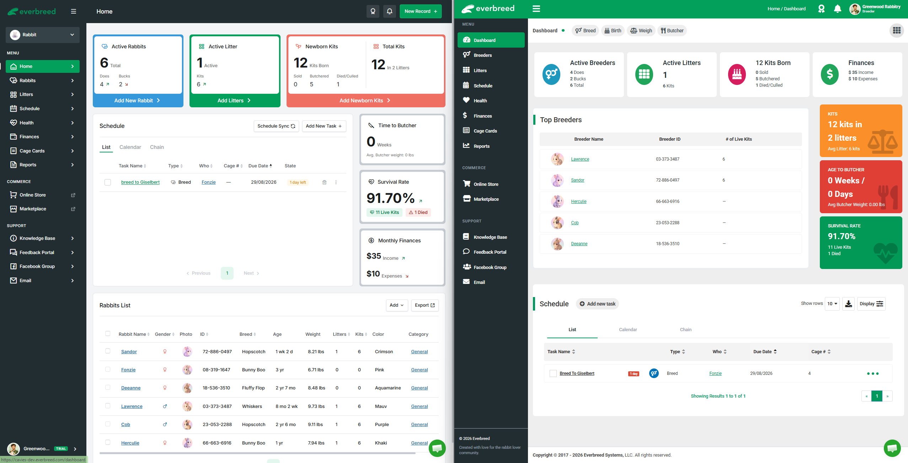

Back to portfolio
Product redesign case study
Everbreed — Modernizing a Legacy SaaS Experience
Modernizing a feature-rich SaaS platform for rabbit breeders while preserving the established workflows existing customers relied on.
01
Context
The Challenge
Everbreed was already a mature, feature-rich product. As the platform evolved, however, its interface had become dated and information-dense, making important content and actions harder to identify.
The challenge was to modernize the experience without disrupting the established workflows existing breeders already understood and depended on.
02
Product principles
Redesign Goals
Make common workflows more actionable
Reduce complexity in dense screens and forms
Improve feature discoverability
Create consistent interaction patterns
Modernize the overall visual experience
03
Before and after
Dashboard Comparison
The dashboard comparison shows how the redesign changed both presentation and product behavior—not simply the visual style.
{kind=link}

PassiveActionable
The dashboard became a place where breeders can understand what needs attention and take common
actions.
DenseStructured
Information was reorganized and prioritized so important data is easier to scan.
InconsistentPredictable
Navigation, forms, search, filtering, sorting, and other interactions follow more consistent patterns.
04
Decisions and solution
Key Product Improvements
The redesign applied the same product principles across high-frequency workflows and information-dense surfaces.
01
Core surface
Dashboard
- Added quick actions
- Added visibility into due and overdue tasks
- Added recently interacted breeders
- Improved financial information
- Removed non-core content
- Simplified high-level metrics
02
Information access
Breeder/Rabbit List
- Improved information hierarchy and scannability
- Made breeding status more visible
- Made breeding details easier to access
03
Data entry
Add/Edit Breeder
- Replaced a long scrolling form with structured sections and tabs
- Grouped related information
- Made custom breed creation easier to discover
- Reduced cognitive load
04
Interaction model
Search, Sorting & Filters
- Filters persist during relevant navigation and actions
- Search respects active filters
- Sorting behaves consistently
- Interaction patterns are more predictable across the product
More evidence and outcomes will be added as the case study develops.
View other case studies